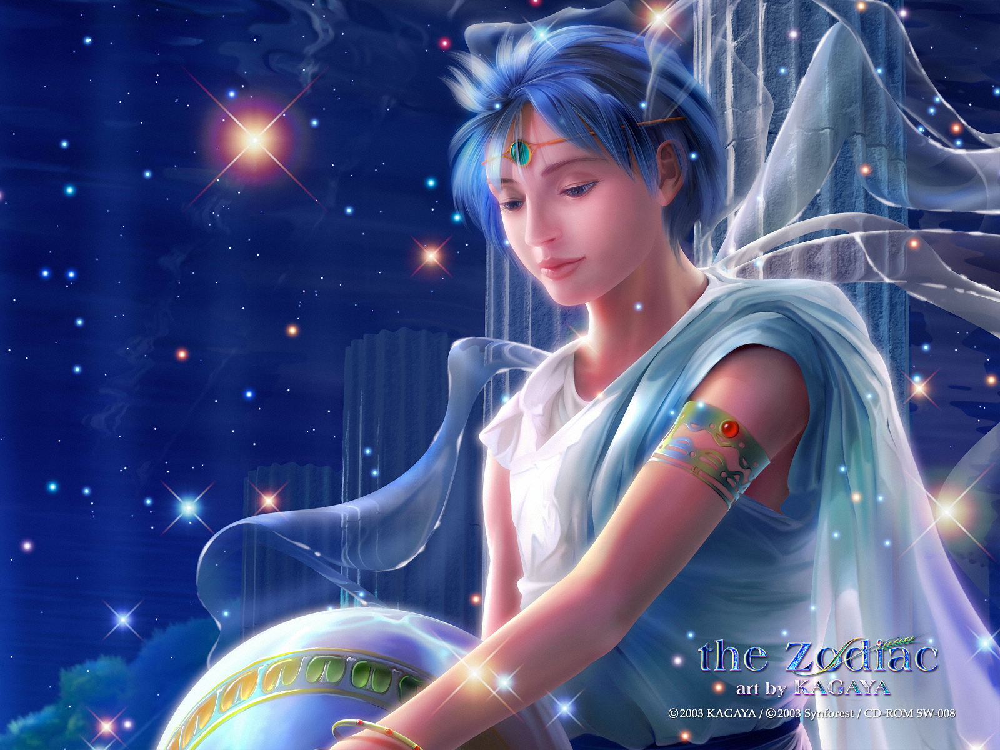
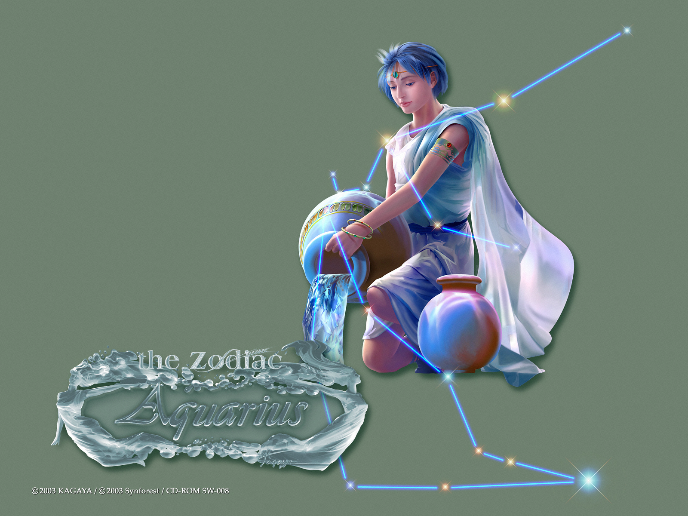
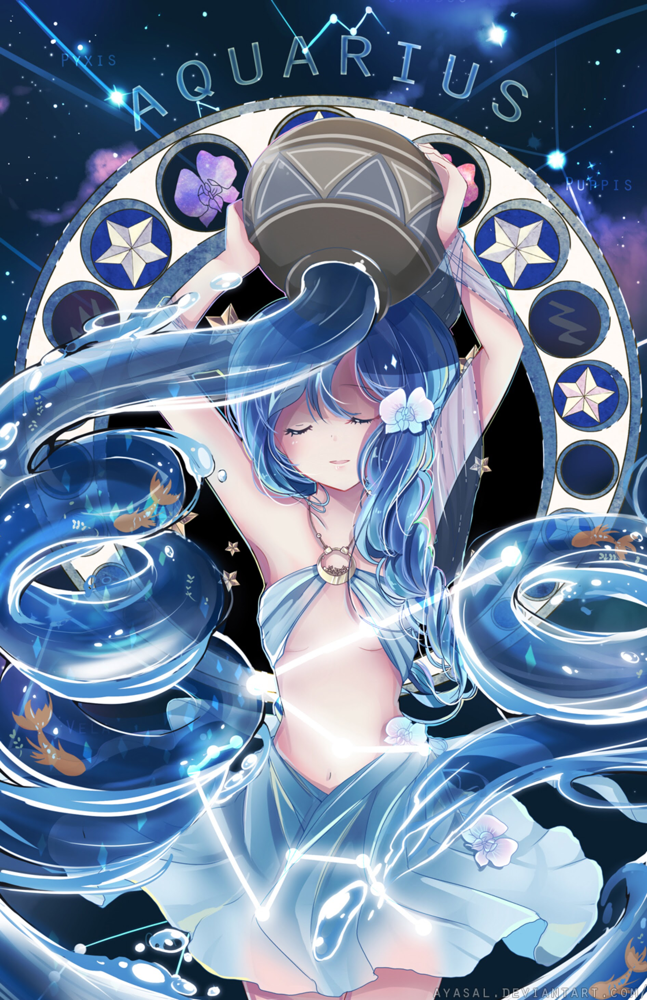

BẢO BÌNH
Là biểu tượng của không khí. Sao chiếu mệnh là sao Thổ và sao Thiên Vương. Người Aquarius rất thật thà, giàu lòng vị tha, thích tự do và năng động. Thông thường, họ rất ít nói, nhưng thỉnh thoảng họ rất nóng nảy và căng thẳng.
Họ đòi hỏi rất nhiều từ những nguời khác, và khi họ thất vọng, họ sẽ bị tổn thương và họ ôm mối thù với người đó. Người Aquarius rất kiêu ngạo, họ thích được khen và không bao giờ nhờ vào sự may rủi.
Họ có một trực giác nhạy bén, khá kỳ cục và thích chỉ trích người khác. Họ có thể trở thành một người bạn tốt, dễ chịu và một người yêu nồng nhiệt. Họ có rất nhiều sở thích và sáng kiến. Những công việc thích hợp với người Aquarius: Nhà thơ, nhà thiên văn học, diễn viên, phi công và thợ rèn.
Trong cung Hoàng đạo, thông thái và hiểu biết khá nhất là dân Bảo Bình. Họ độc đáo, có tài phát minh và mạnh mẽ. Họ ăn mặc kỳ cục, có thể đi tất thể thao với vét cũng chẳng sao. Thêm nữa, họ gần như luôn đến trễ vì thời gian chẳng có nghĩa lý gì. Họ thích gọi điện tâm sự với bạn bè và trò chuyện cả đêm với hàng xóm.
2, Mô tảChú ý đặc biệt: Với tư cách là thiên sứ của thời đại Hoàng Kim vào thời điểm sơ khai của niên đại Bảo Bình, chòm sao của bạn chính là vị thủ lĩnh của 12 cung Hoàng Đạo.
Bảo Bình là những người bí ẩn và khác thường nhất trong cung Hoàng đạo. Dưới chòm sao này, họ chịu sự cai quản của sao Thiên Vương – biểu tượng của sự đổi mới và phá cách- sẽ dẫn họ đi theo nhịp đập của riêng họ.
Họ nhìn đời theo một cách khác. Người đời thấy thói quen và suy nghĩ của Bảo Bình là lập dị và khác thường theo một cách nào đó. Nhiều sách chiêm tinh học có nói cùng một ý sau: “Những gì Bảo Bình nghĩ, nửa thế kỷ sau người khác mới hiểu!”.Nhưng chính điều này làm Bảo Bình thêm độc đáo. Cung Bảo Bình sinh ra nhiều thiên tài hơn bất cứ cung Hoàng đạo nào khác. Đồng thời, cung này cũng có số lượng lớn nhất những người, ở mức độ ít hay nhiều, bị mắc bệnh tâm thần.
Với thiên phú nhìn xa trông rộng, Bảo Bình là tài sản của cả nhân loại, là biểu tượng cho những hoài bão thầm kín và lý tưởng cao vời của con người.
Người tuổi này thường tỏ ra năng động, xây dựng những gì cần thiết cho bản thân và gia đình của họ. Họ thích sự công bằng và đánh giá sự công bằng ấy qua hành động của những người chung quanh. Họ rất chân thật, thủy chung, có lòng vị tha, nhiều sáng kiến và nổi bật xuất sắc khi họ còn trẻ tuổi. Tuy nhiên đôi khi họ tỏ ra ngang bướng, bảo thủ và lại ngang bướng. Bản chất của họ rất khó xác định, vì họ thường hay thay đổi khi hấp thụ những tư tưởng mới.
Bảo Bình thích cười đùa với bạn bè, đặc biệt là những người gắn bó với họ từ thời thơ ấu. Trong khung cảnh này, họ hoàn toàn được sống hết mình và nói cười thoải mái. Cung này luôn tìm cách để giúp đỡ những người có hoàn cảnh khó hơn mình mà không hề có chút dè bỉu nào. Bên cạnh đó, những cuộc hội thoại hài hước, dí dỏm cũng làm họ rất mê. Có thể ở đó, họ được thể hiện mình nhiều hơn.
Điều Bảo Bình ghét nhất là không giữ lời hứa. Vậy nên, ai đó thất hứa 2 đến 3 lần thì niềm tin của Bảo Bình đã vơi đi gấp nhiều lần con số đó. Người cung này cũng không chịu nổi sự cô đơn và thái độ thờ ơ của mọi người xung quanh. Nếu bị trong tình trạng như thế này, họ coi đây là một sự trừng phạt.
Về tình yêu, người Bảo Bình rất nhạy cảm và lãng mạn. Tình yêu đóng vai trò rất quan trọng đối với họ vì nó là nguồn cảm hứng lớn lao cho họ. Vì lý tưởng hóa, nếu thấy đối tượng không hợp, họ sẵn sàng từ bỏ đi tìm tình yêu lý tưởng khác rất mau lẹ. Thường thì từ tháng 4 đến tháng 7 họ hay có những nhạy cảm về tình cảm.
Bảo Bình có những khả năng quan sát rất bén nhậy. Họ có thể nhận thức được rất nhiều chi tiết mà không cần chú ý nhiều. Khả năng phân tích tổng hợp và phân loại của họ cũng tỏ ra mau lẹ. Họ có thể hành động ngay khi người khác chưa đủ thì giờ suy nghĩ. Hành động mau lẹ này thường đúng, trừ trường hợp có tình cảm xen vào làm họ phán đoán sai lầm.
Khi họ sử dụng trí tưởng tượng, họ có thể nghĩ ra bất cứ một trường hợp lập dị nào, và cũng có thể dùng trí tưởng tượng trong thực tế một khi họ muốn vậy. Trí tưởng tượng là khả năng duy nhất giúp người ta tiên đoán được những điều mới mẻ, tiến bộ. Trí tưởng tượng giúp người này nhìn về quá khứ một cách rõ ràng và dựng lên những ý định cho tương lai.
Họ có trí nhớ rất khá, có thể học hỏi mọi thứ rất mau chóng và có thể họ chỉ muốn biết để mà biết rồi bỏ đi. Họ có thể quên tên kẻ vừa giới thiệu, nhưng có thể nhớ vài chi tiết về người đó cho tới vài năm. Họ thường hay xếp đặt thứ tự ngay những gì thu lượm được ở bên ngoài. Họ cũng nên làm như vậy với những ý tưởng của chính mình để thẩm định giá trị xác thực trước khi có hành động.
Những ý tưởng do cảm hứng gợi nên cần được cân nhắc kỹ lưỡng. Bảo Bình thường có trực giác đáng kể giúp họ có những nhận thức bén nhậy về những dự tưởng của người khác. Bảo Bình thường là những kẻ theo cá nhân chủ nghĩa và không ai có thể giúp họ thay đổi trừ phi chính họ muốn thay đổi mình.
Bảo Bình không ưa thích những sự nhỏ mọn của người khác, họ cũng nên tự xét mình, và xem mình có như vậy không đã. Họ có khá nhiều can đảm và thường hay liều lĩnh đến độ khinh suất. Họ có nhiều tham vọng, và thường hay bám chặt lấy những gì mà họ thích thú. Họ là những kẻ hay mơ mộng, và có khả năng biến mộng thành thực. Nếu có người bỏ mặc Bảo Bình khi thấy họ giận dữ thì sẽ thấy rằng tình trạng này sẽ qua đi mau chóng.
Nếu tranh luận với người Bảo Bình không đúng lúc, sự tranh luận có thể trở nên cãi vã lâu dài. Cũng có khi không thể nào bàn cãi một điều gì với họ được. Khi chịu ảnh hưởng bởi những ý tưởng tốt họ sẽ là những người hiểu biết nhất thế giới.
sNhững người chịu ảnh hưởng bất nhất của tuổi này có một đầu óc rất linh hoạt và tiến bộ. Họ luôn luôn bận rộn suy nghĩ về một điều gì dù rằng đó chỉ là một ảo tưởng. Thường thường họ phán xét rất giỏi, nhưng khi bị tình cảm chi phối, sự phán đoán của họ trở nên rất tồi tệ. Nên hết sức tránh né những ý tưởng giả dối.
Bản chất con người Bảo Bình rất khó xác định, bởi vì họ hay thay đổi. Có lúc họ tỏ ra hoạt động, phô bày, hấp dẫn. Nhưng có lúc lại tỏ ra nhút nhát, thờ ơ và lười biếng. Đó là phản ánh của một tâm hồn nghiêm chỉnh sau khi đã hoạt động thái quá. Những người Bảo Bình là những người rất đáng cho người khác chú ý đến một khi gặp gỡ.
Họ có sự hấp dẫn tự nhiên, dù rằng trong đôi lúc họ có vẻ giữ kẽ và e thẹn, họ có thể tỏ ra hoạt bát và tạo được thiện cảm với tất cả những người họ gặp. (Bảo Bình là những người chân thật và chung thủy). Lòng vị tha là một trong những đức tính chính của họ, nhưng điều này không có nghĩa là nhân sinh quan của họ hoàn toàn đúng.
Họ là những kẻ ngoan cố và có thể rất cứng đầu và độc lập. Họ có một tinh thần mạo hiểm đáng kể. Họ có thể trở nên tức giận thực sự, và khi đó họ có thể ăn nói rất khó thương; cũng may cơn giận của họ thường qua đi mau chóng và không thù hận lâu dài. Những người đàn bà Bảo Bình thường duy trì những ý nghĩ xấu lâu hơn đàn ông.
3, Tính cách cơ bảnChúng ta đều biết, mọi sinh vật trên trái đất này, không sinh vật nào có thể sống nổi nếu tách khỏi nước. Không có nước, loài người sẽ nhanh chóng chết khô. Bảo Bình làm những việc giống nhau, tiến lên phía trước không biết mệt mỏi, đem dòng nước nhân ái của chủ nghĩa lý tưởng tưới cho những người đang khát.
Tuy hành vi của con người thường nảy sinh xung đột với lý tưởng của họ, khiến cho họ cảm thấy thất vọng, nhưng vẫn theo đuổi kiên trì mục tiêu và tin tưởng cuối cùng sẽ có một ngày nào đó họ sẽ trút bỏ được mọi phiền phức của mình (và cả những phiền phức của cả thế giới). Họ mang theo suy nghĩ ngây thơ này nhưng lại kinh ngạc khi phát hiện thấy những người khác hoàn toàn không công nhận hi vọng phi thực tế này của mình.
Tuy những người Bảo Bình hiện đại rất ít khi ý thức được, tín ngưỡng của họ bắt nguồn từ lòng nhân ái kiểu anh em. Họ tràn đầy nhiệt tình muốn cùng phát hiện thấy những ân huệ vĩ đại hơn chứ không chỉ là mối quan hệ giữa con người với con người. Theo họ mối quan hệ bạn bè bình thường này thì không bị ràng buộc hay hạn chế nào, còn ở tình cảm sâu nặng với một vài người chắc chắn sẽ mất tự do ở một số phương diện và phải thực hiện một số nghĩa vụ nhất định. Triết lý sống của họ là “Không vướng bận gì, luôn tiến thẳng về phía trước”.
Cần nhớ rằng người đầu tiên thuộc chòm Bảo Bình đến với thế giới này chỉ là một người bình thường, anh ta vừa không tài sản vừa không có địa vị, chúng ta sẽ rất dễ dàng hiểu được một đặc trưng bản năng của chòm Bảo Bình chính là lý tưởng hóa “con người sinh ra đã vốn bình đẳng”.
Điều này đã thúc đẩy họ từ chối cúi đầu trước tiền tài, đặc quyền và quyền quý, hơn nữa cho dù địa vị trong cuộc sống có cao đến thế nào đi chăng nữa, họ cũng không bao giờ xem thường những người có địa vị thấp trong xã hội. Nhưng, khi giao kết với Bảo Bình, chúng ta phải nhớ, trong ý thức của họ luôn tiềm ẩn thân phận mà các tiền bối trước đây đã giao cho họ.
Tiền bối này chính là người bán nước đã từng được thần lựa chọn vì vẻ đẹp hoàn mỹ của anh ta. Cảm giác ưu việt này được biểu hiện ở nụ cười luôn rạng rỡ trên mặt và những hành động hữu hảo, vì vậy Bảo Bình luôn hi vọng có được sự tôn trọng của người khác, cho dù những người đó là những người như thế nào và họ đang làm gì. Kết quả, họ không muốn nghe theo mệnh lệnh của người khác, cũng không muốn cúi mình trước những chuyện thế tục.
Bảo Bình luôn có tầm nhìn xa rộng, độc lập tự chủ, cũng tích cực tiến thủ. Họ không bao giờ che dấu sự coi thường đối với những tư tưởng và hành vi bảo thủ, tư tưởng của họ luôn cao hơn mọi người một bậc, họ luôn có thể tự tin dự đoán được tương lai. Thảo nào mà mọi người cho rằng họ là một người theo chủ nghĩa cá nhân. Bảo Bình không hoàn toàn cảm thấy tổn thương vì sự đánh giá này, ngược lại họ cảm thấy vui vẻ.
Tư tưởng luôn hướng tới tương lai của họ khiến cho họ coi nhẹ những quy định đã được hình thành từ trước, họ ăn mặc rất táo bạo. Kiểu dáng và cách phối màu của các trang phục táo bạo của họ thường xuyên gây chấn động rất lớn. Tuy họ không coi trọng tiền bạc nhưng những y phục mà họ mặc lại là những thứ đắt tiền. Cũng vì tư tưởng hướng tới tương lai, nên những sản phẩm kỹ thuật mới nhất mà cuộc sống tiện nghi cần có thường xuyên xuất hiện trong nhà họ và ở nơi làm việc.
Cao hơn người khác một bậc hoàn toàn không phải là một trong những điều mà Bảo Bình lo lắng. Trên thực tế, họ luôn muốn thu hút sự chú ý của người khác; hơn nữa họ say sưa vì điều đó. Vì thế, những người nhát gan hoặc những người say mê chính trị không nên gần họ. Nhưng, những người có quan hệ mật thiết với họ sẽ có rất nhiều sự đồng tình và thông hiểu, giữa họ không tồn tại chủ nghĩa quyền lực, họ có thể cùng chung hưởng tiền bạc và triết học nhân sinh.
4, Phương thức tư duy, kỹ xảo giao lưu và khả năng thích ứng với công việcBảo Bình không thể chịu đựng được sự kém cỏi ngu dốt nào. Họ cũng không do dự biểu hiện ra điều đó. Họ luôn biểu đạt những suy nghĩ của mình không chút sợ hãi. Có lúc người nghe sẽ cảm thấy nghi ngờ đối với sự hăng say của họ. Khi họ đã quyết định một việc nào đó, thì nó sẽ trở thành quyết định cuối cùng, cho dù thế nào cũng không khiến họ thay đổi.
Nếu bạn tiếp tục tranh luận với họ, bạn sẽ thấy Bảo Bình sẽ cười và dứt khoát bỏ đi không quay đầu trở lại. Không thể phủ nhận, do kiểu người này không thể tự ép mình bước lên địa vị làm quan, vì vậy họ cũng không ép người khác hoặc dẫn dụ người khác nghe theo mình.
Những suy nghĩ về quyền lực đã phản lại nguyên tắc “con người sinh ra là bình đẳng”, nhưng sự bình đẳng của con người lại là nguyên tắc mà họ luôn thực hiện và tuân thủ. Nhưng, vẫn còn có một nguyện vọng, đó chính là chỉ dẫn con người hiện đại hướng tới tương lai, họ coi đây là nghĩa vụ của họ đối với cuộc sống.
Khi nói chuyện và giao lưu với Bảo Bình ta cũng thấy có những chuyện gần như là mâu thuẫn. Cách nói chuyện và giao lưu của họ xem ra là hữu hảo, thậm chí giống như anh em vậy, nhưng khẩu khí và cách thức của họ lại nói lên rằng họ không chấp nhận ý kiến phản đối của người khác. Họ có giọng nói hùng hồn, rõ ràng rành mạch, hơn nữa nét mặt còn thể hiện sự hoà hợp thân thiện, hơi có nét cười mang tính chuyên nghiệp.
Đặc điểm rõ nhất của kiểu người này chính là rất hay cười, điều đó có thể làm cho những người phản đối họ thay đổi ý kiến, khiến cho những người cùng đường đi cổ vũ họ. Nụ cười mỉm của họ rất ít khi chuyển thành cười lớn, hơn nữa nếu họ cười lớn thì thường là rất đột ngột, thông thường đều là do quá vui vì những trò cười hoặc những câu chuyện hứng thú.
Các kiểu nhiệt thành này hoàn toàn không phải là phong cách của Bảo Bình. Cũng giống với Song Tử và Thiên Bình, Bảo Bình cũng giỏi giao tiếp, họ thường hi vọng được làm bạn với người khác, nhưng họ có ý tìm kiếm những người không quá gần gũi, không đòi hỏi quá nhiều vấn đề để làm bạn. Kiểu người mà họ thích nhất là những người có thể tiếp nhận cách tư duy mang tính nhảy vọt của họ và những người thích nói chuyện. Bạn bè của Bảo Bình phát triển theo cách “đừng gọi điện thoại cho tôi, tôi sẽ gọi điện thoại cho bạn”.
Bảo Bình thích hợp với những công việc cần sự tư duy mang tính phán đoán trước. Họ không thích hợp với những công việc gian khổ nặng nhọc, địa vị thấp kém, lúc nào cũng phải nghe lời. Nếu phải làm những công việc này, họ sẽ rất không hứng thú, không phục tùng.
Nếu bạn thuộc chòm Bảo Bình hãy nhớ: tìm một số công việc có thể mang ra ngoài du lịch, khuyến khích những quan điểm sáng tạo và đi trước thời đại. Tìm kiếm những nghề nghiệp có thể gia tăng hứng thú cho chủ nghĩa nhân đạo, bạn có thể giúp đỡ người khác. Tất cả những nghề có liên quan đến giao tiếp xã hội và khoa học cần phải tiến hành quan sát khách quan và tìm hiểu sâu sắc tỉ mỉ.